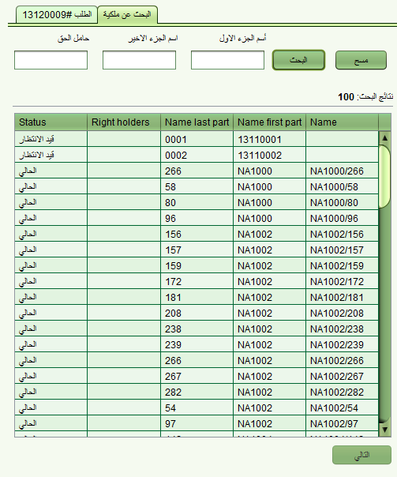

تستطيع انشاء ملكية جديدة من ملكية موجودة باستخدام اما سند ملكية (تملك حر), سند ملكية لشقة, تسجيل مالك جديد او خدمة عقار جديد. باستخدام طلب معين, ابدأ خدمة ملكية جديدة من شاشة تفاصيل الطلب وصفحة الخدمات للوصول الى حركة ربط ملكية

سوف يتم سؤالك اذا كنت تريد ربط ملكية سابقة بالملكية الجديدة
بعد أن تقوم باختيار الملكية السابقة التي تريد ان تحل محلها, تستطيع اختيار الحقوق والقطع لربطها مع الملكية الجديدة كذلك حدد نوع العلاقة بين الملكيتين (سابقة , جذر)
رسالة تذكير للقيام بالتغييرات على الملكية الحالية سيتم فتحها. للقيام بذلك وعندما تتغير حالة الملكية الجديدة من قيد العمل الى حالية , اضغظ على انهاء في شاشة الملكية لانهاء الملكية القبلية
انظر ايضا